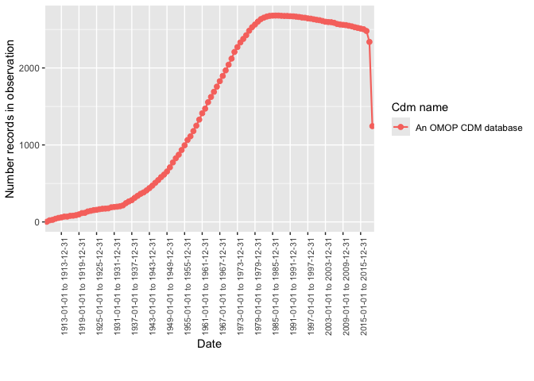

The goal of OmopSketch is to characterise and visualise an OMOP CDM instance to asses if it meets the necessary criteria to answer a specific clinical question and conduct a certain study.
Installation
OmopSketch is available from CRAN:
install.packages("OmopSketch")You can install the development version of OmopSketch from GitHub with:
# install.packages("remotes")
remotes::install_github("OHDSI/OmopSketch")Example
Let’s start by creating a cdm object using the Eunomia GiBleed mock dataset:
library(OmopSketch)
library(omock)
library(dplyr, warn.conflicts = FALSE)
cdm <- mockCdmFromDataset(datasetName = "GiBleed", source = "duckdb")
#> ℹ Reading GiBleed tables.
#> ℹ Adding drug_strength table.
#> ℹ Creating local <cdm_reference> object.
#> ℹ Inserting <cdm_reference> into duckdb.
cdm
#>
#> ── # OMOP CDM reference (duckdb) of GiBleed ────────────────────────────────────
#> • omop tables: care_site, cdm_source, concept, concept_ancestor, concept_class,
#> concept_relationship, concept_synonym, condition_era, condition_occurrence,
#> cost, death, device_exposure, domain, dose_era, drug_era, drug_exposure,
#> drug_strength, fact_relationship, location, measurement, metadata, note,
#> note_nlp, observation, observation_period, payer_plan_period, person,
#> procedure_occurrence, provider, relationship, source_to_concept_map, specimen,
#> visit_detail, visit_occurrence, vocabulary
#> • cohort tables: -
#> • achilles tables: -
#> • other tables: -Snapshot
We first create a snapshot of our database. This will allow us to track when the analysis has been conducted and capture details about the CDM version or the data release.
summariseOmopSnapshot(cdm) |>
tableOmopSnapshot(type = "flextable")
Characterise the clinical tables
Once we have collected the snapshot information, we can start characterising the clinical tables of the CDM. By using summariseClinicalRecords() and tableClinicalRecords(), we can easily visualise the main characteristics of specific clinical tables.
summariseClinicalRecords(cdm, c("condition_occurrence", "drug_exposure")) |>
tableClinicalRecords(type = "flextable")
#> ℹ Adding variables of interest to condition_occurrence.
#> ℹ Summarising records per person in condition_occurrence.
#> ℹ Summarising subjects not in person table in condition_occurrence.
#> ℹ Summarising records in observation in condition_occurrence.
#> ℹ Summarising records with start before birth date in condition_occurrence.
#> ℹ Summarising records with end date before start date in condition_occurrence.
#> ℹ Summarising domains in condition_occurrence.
#> ℹ Summarising standard concepts in condition_occurrence.
#> ℹ Summarising source vocabularies in condition_occurrence.
#> ℹ Summarising concept types in condition_occurrence.
#> ℹ Summarising missing data in condition_occurrence.
#> ℹ Adding variables of interest to drug_exposure.
#> ℹ Summarising records per person in drug_exposure.
#> ℹ Summarising subjects not in person table in drug_exposure.
#> ℹ Summarising records in observation in drug_exposure.
#> ℹ Summarising records with start before birth date in drug_exposure.
#> ℹ Summarising records with end date before start date in drug_exposure.
#> ℹ Summarising domains in drug_exposure.
#> ℹ Summarising standard concepts in drug_exposure.
#> ℹ Summarising source vocabularies in drug_exposure.
#> ℹ Summarising concept types in drug_exposure.
#> ℹ Summarising concept class in drug_exposure.
#> ℹ Summarising missing data in drug_exposure.
Characterise the observation period
After visualising the main characteristics of our clinical tables, we can explore the observation period details. You can visualise and explore the characteristics of the observation period per each individual in the database using summariseObservationPeriod().
summariseObservationPeriod(cdm) |>
tableObservationPeriod(type = "flextable")
#> Warning: ! There are 2649 individuals not included in the person table.
Or if visualisation is preferred, you can easily build a histogram to explore how many participants have more than one observation period.
summariseObservationPeriod(cdm) |>
plotObservationPeriod(colour = "observation_period_ordinal")
#> Warning: ! There are 2649 individuals not included in the person table.
Explore trends over time
We can also explore trends over time using summariseTrend().
summariseTrend(cdm, event = c("condition_occurrence", "drug_exposure"), output = "record", interval = "years") |>
plotTrend(facet = "omop_table", colour = "cdm_name")
Characterise the concepts
OmopSketch also provides functions to explore the concepts in the dataset.
summariseConceptIdCounts(cdm, omopTableName = "drug_exposure") |>
tableTopConceptCounts()| Top |
Cdm name
|
|---|---|
| GiBleed | |
| drug_exposure | |
| 1 |
Standard: Acetaminophen 325 MG Oral Tablet (1127433) Source: Acetaminophen 325 MG Oral Tablet (1127433) 9365 |
| 2 |
Standard: poliovirus vaccine, inactivated (40213160) Source: poliovirus vaccine, inactivated (40213160) 7977 |
| 3 |
Standard: tetanus and diphtheria toxoids, adsorbed, preservative free, for adult use (40213227) Source: tetanus and diphtheria toxoids, adsorbed, preservative free, for adult use (40213227) 7430 |
| 4 |
Standard: Aspirin 81 MG Oral Tablet (19059056) Source: Aspirin 81 MG Oral Tablet (19059056) 4380 |
| 5 |
Standard: Amoxicillin 250 MG / Clavulanate 125 MG Oral Tablet (1713671) Source: Amoxicillin 250 MG / Clavulanate 125 MG Oral Tablet (1713671) 3851 |
| 6 |
Standard: hepatitis A vaccine, adult dosage (40213296) Source: hepatitis A vaccine, adult dosage (40213296) 3211 |
| 7 |
Standard: Acetaminophen 160 MG Oral Tablet (1127078) Source: Acetaminophen 160 MG Oral Tablet (1127078) 2158 |
| 8 |
Standard: zoster vaccine, live (40213260) Source: zoster vaccine, live (40213260) 2125 |
| 9 |
Standard: Acetaminophen 21.7 MG/ML / Dextromethorphan Hydrobromide 1 MG/ML / doxylamine succinate 0.417 MG/ML Oral Solution (40229134) Source: Acetaminophen 21.7 MG/ML / Dextromethorphan Hydrobromide 1 MG/ML / doxylamine succinate 0.417 MG/ML Oral Solution (40229134) 1993 |
| 10 |
Standard: hepatitis B vaccine, adult dosage (40213306) Source: hepatitis B vaccine, adult dosage (40213306) 1916 |
Characterise the cdm
To obtain and explore a complete characterisation of a cdm, you can use the OmopSketch functions databaseCharacteristics() and shinyCharacteristics(). These functions allow you to generate and interactively explore detailed summaries of your database. To see an example of the outputs produced, explore the characterisation of several synthetic datasets here.
As seen, OmopSketch offers multiple functionalities to provide a general overview of a database. Additionally, it includes more tools and arguments that allow for deeper exploration, helping to assess the database’s suitability for specific research studies. For further information, please refer to the vignettes.